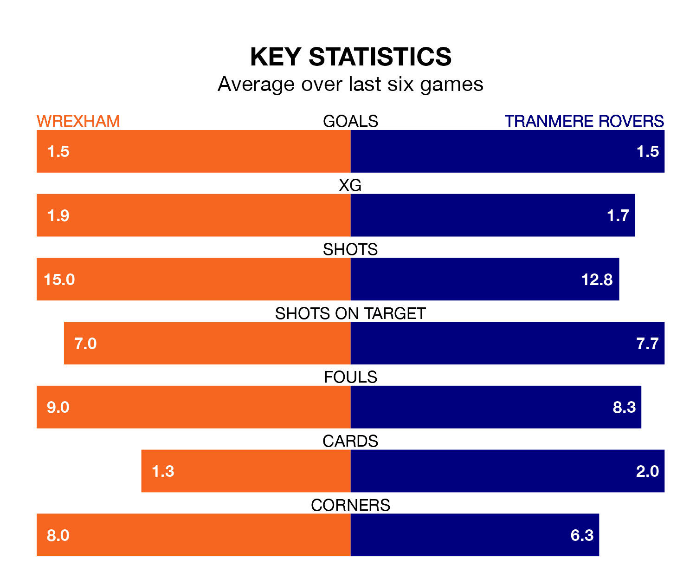

Tranmere Rovers travel to Wrexham on Saturday in EFL League Two.
The visitors come into the game on the back of a win in their last match, having beaten Mansfield Town 2-1 at home, with goals from Regan Hendry and Robert Apter.
The Dragons, meanwhile, drew their last match, 0-0 against Harrogate Town.
With 67 goals in 37 games so far this season, Wrexham are scoring more than average in the league with 1.8 goals per game. And they are conceding fewer than average, letting in 46 goals at a rate of 1.2 per game.
Tranmere, meanwhile, are average scorers, with 1.5 goals per game. They have conceded 1.4 goals per game.
The Dragons are third in the table after 37 games, of which they have won 19 and drawn 10, earning 67 points.
Rovers are 13 places behind the home team in 16th, with 14 wins and five draws putting them on 47 points.
In the last 10 years, Wrexham and Tranmere have played each other on seven occasions. Wrexham won three of them, Tranmere two, and they drew twice.
On average, the Dragons scored 1.1 goals and Tranmere 1.1 in those matches.
Their last meeting was on September 2, when Wrexham won 1-0 away.
In Arthur Okonkwo, Wrexham can rely on one of the league's safest pair of hands. He has kept 11 clean sheets in his 27 appearances this season in EFL League Two.
In the visitors' net, Luke McGee has seven clean sheets in 37 games. He has conceded a goal every 70 minutes, 50% more often than the 104 minutes between goals for Okonkwo.
Wrexham are in mixed form in EFL League Two, with two wins and three draws from their last six games.
With three wins and a draw over that period, Tranmere's form is slightly better – they have taken 10 points from 18, compared to the Dragons' nine.
Saturday's match will be refereed by Scott Oldham, who has taken charge of 10 EFL League Two games so far this season, issuing no red cards and booking 33 players. He has awarded three penalties.
The last Wrexham game Oldham refereed was a 4-1 home win against Barrow on January 1. His last Tranmere match was their 2-1 win at home against Bradford City on October 3.
Updated: 15:10 (UTC), 15/03/24